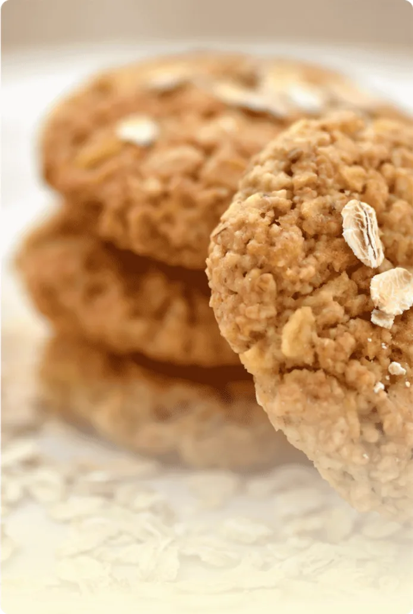
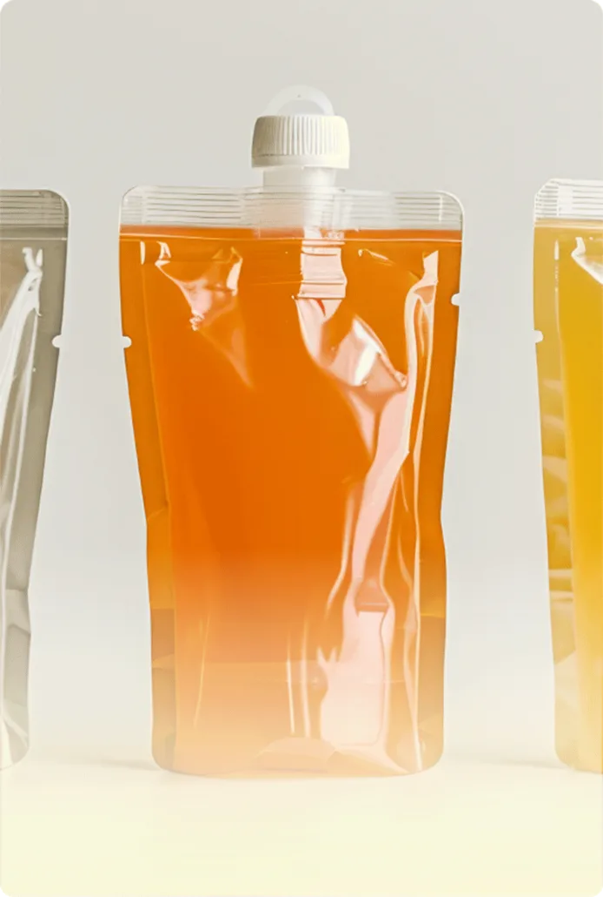
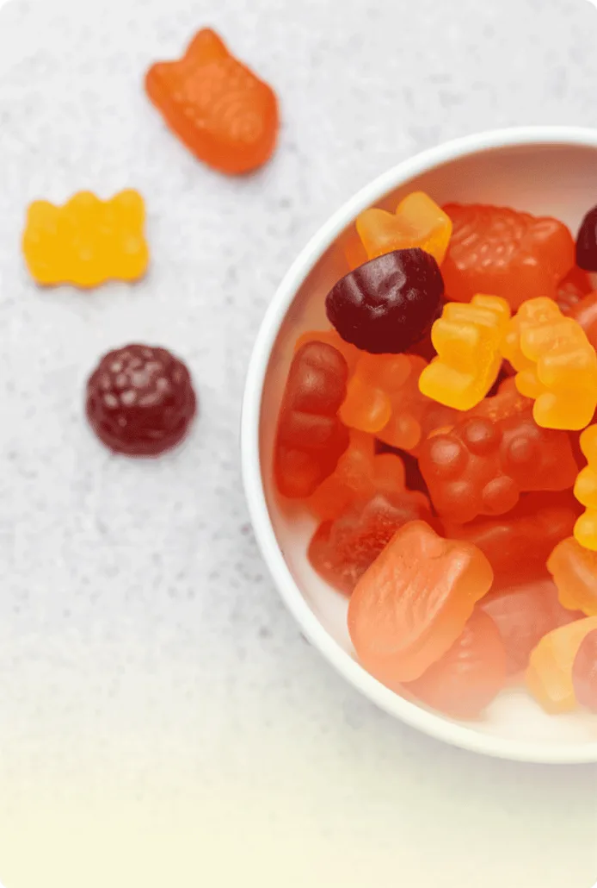
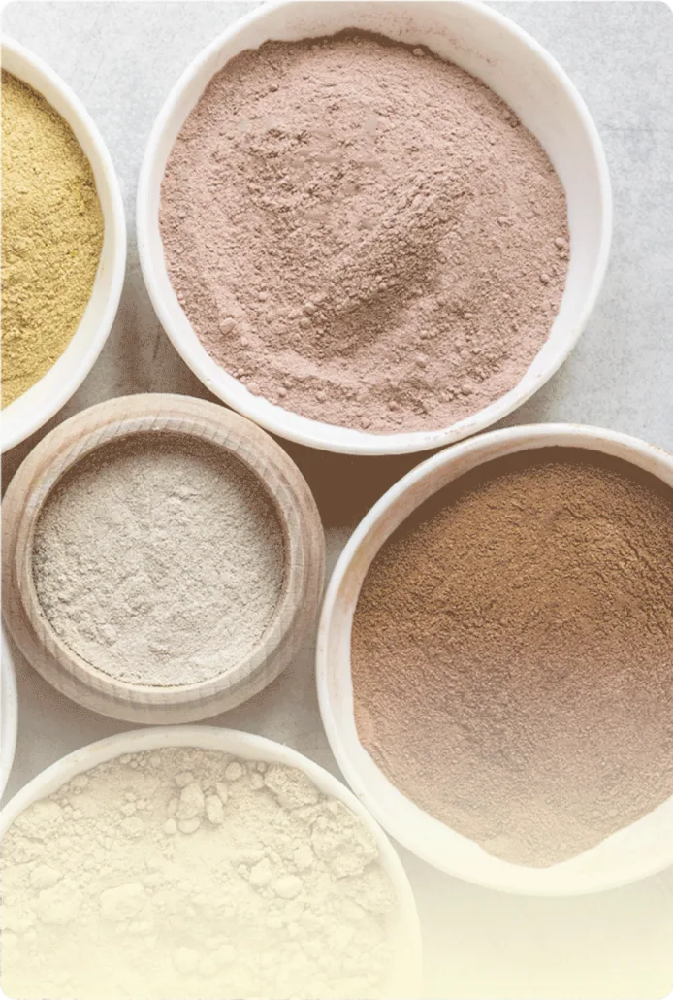
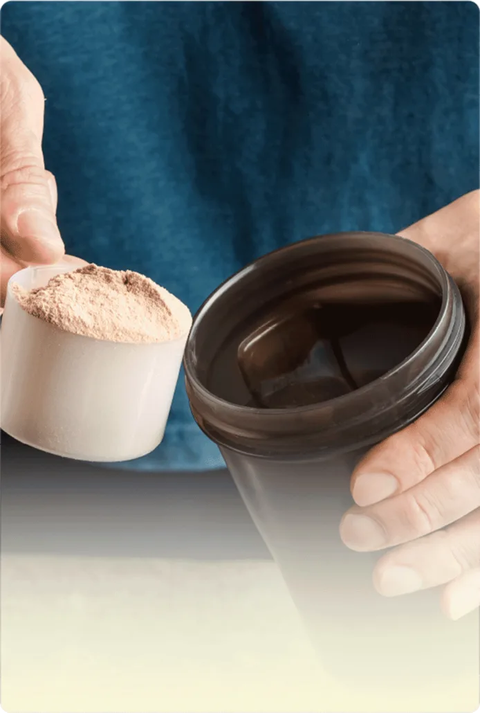
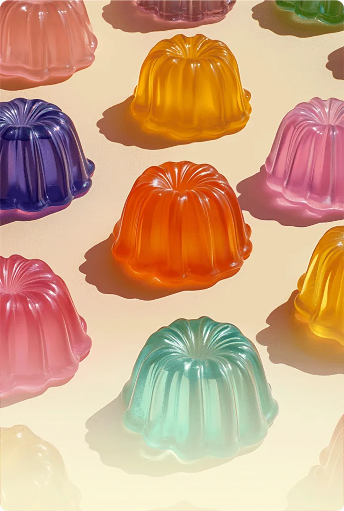

保健食品 ODM／OEM 代工
保健食品代工，
配方到包裝一站完成。
百達醫為品牌客戶開發與生產保健食品：膠囊、錠劑、粉包、飲品、果凍等劑型，從配方、包裝到量產由同一個團隊負責。2008 年成立，製程依 ISO 22000 與 HACCP 規範管理。
DOSAGE FORMS
可製作的劑型
吞嚥難易、風味、劑量與攜帶性，決定了一個劑型適合哪些客群。膠囊與錠劑可直接看樣式與尺寸；其他劑型依您的配方一起討論。
看全部劑型與包材
機能餅乾
從日常點心切入，開發時一起討論口感、份量與配方搭配。
討論餅乾開發 ↗
搖搖隨身袋
以攜帶與沖泡情境出發，討論單份用量、溶解性與風味。
討論隨身袋開發 ↗
糖果劑型
將補給融入食用體驗，先確認口感、甜度與原料搭配。
討論糖果開發 ↗動／植物膠囊
依內容物、填充量與素食需求，評估膠囊基材和尺寸。
查看樣式與尺寸 →錠狀顆粒
從外型與尺寸開始，進一步確認配方壓錠與食用方式。
查看樣式與尺寸 →
粉末食品
先釐清直接食用或沖泡需求，再搭配風味、份量與包材。
討論粉末開發 ↗
營養代餐
以目標客群與食用情境出發，討論營養組成、份量與口味。
討論代餐開發 ↗
果凍／茶包
選擇即食或沖泡方向，再討論風味、質地與單份包裝。
討論果凍或茶包 ↗HOW WE WORK
合作流程
從第一次諮詢到交貨共八個步驟，由專案顧問整合配方、法規、包裝與製造團隊。
看合作流程與常見問題- 01需求與市場定位CONSULT
- 02配方與劑型提案FORMULATE
- 03成本與時程確認PROPOSAL
- 04打樣與風味調整PROTOTYPE
- 05包裝與法規檢視REVIEW
- 06訂單與量產準備PREPARE
- 07生產與品質放行PRODUCE
- 08交付與上市支援DELIVER
食品安全管理系統
危害分析重要管制點
原料、製程與成品紀錄
規格與安全層層確認


CONTACT
想做自己的保健食品？
告訴我們產品想法、預計劑型與數量，專案顧問會與您聯繫，說明可行的開發方式。
代工諮詢